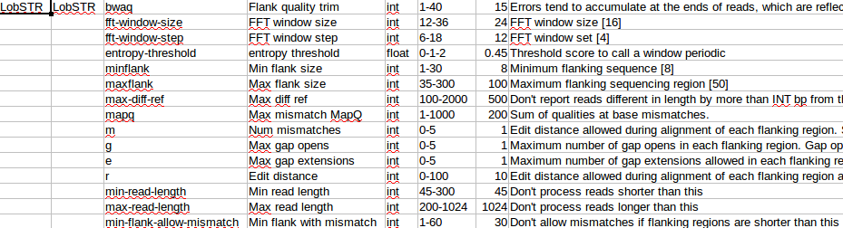

Pipeline tool arguments/options, their types, ranges and defaults are defined in the mpsforensics/forensicsapp folder, in .cfg files. These files are just tab-separated files that can be created or modified in Excel, Libre Office Calc or any plain text editor.
The columns are as follows:
Note: The pipeline expects tools to have single dashes leading single character arguments and double dashes leading multi-character arguments. Other input types will need to be hard-coded in Python